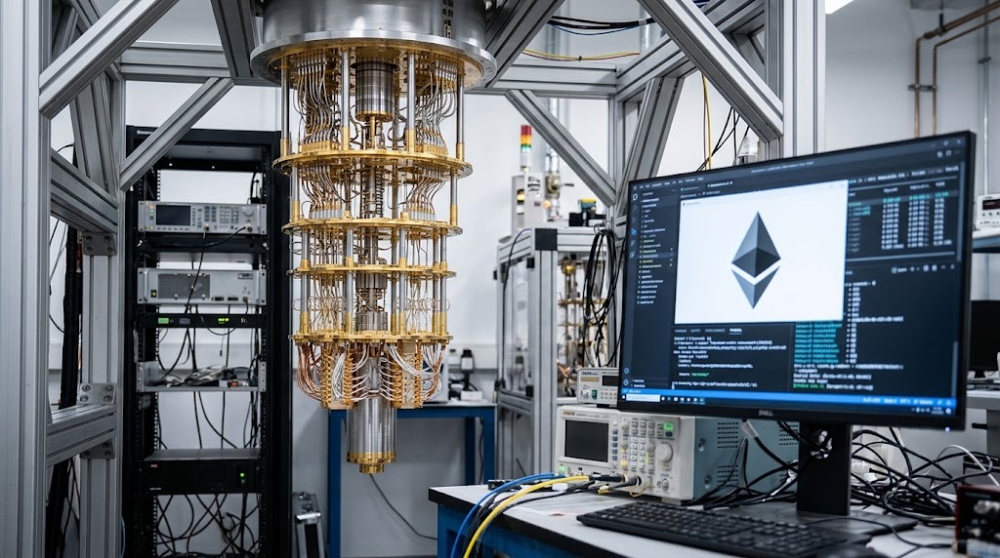

Ethereum Researchers Drop Quick Slots to Prioritize Quantum Security
Ethlabs is urging Ethereum developers to prioritize post-quantum account security for the proposed 2027 Hegotá upgrade, withdrawing its faster-block proposal as it redirects resources toward cryptographic resilience.

Ethereum's development priorities are facing a significant change as research group Ethlabs moves away from its proposal to accelerate block production and redirects its attention toward post-quantum security. The group says it wants the network to prepare for a future in which advances in quantum computing and artificial intelligence could change the assumptions underpinning modern cryptography.
The decision puts a longer-term security question ahead of a performance improvement that had attracted interest from parts of the Ethereum community. Ethlabs said it would withdraw its Quick Slots proposal from the planned Hegotá upgrade and concentrate its resources on a roadmap it calls pqai27, which targets post-quantum and post-AI readiness by 2027.
The announcement does not mean Ethereum faces an imminent quantum attack. It reflects a strategic argument about how long protocol development, testing and community coordination can take. Cryptographic changes affect the security of assets and applications across the network, making early preparation important even when the underlying threat remains uncertain.
Why Ethlabs is changing direction
Quick Slots is Ethereum Improvement Proposal EIP-8198. It was designed to make Ethereum's block interval shorter, initially reducing the time between slots from 12 seconds to 10 seconds. A shorter interval could make transaction inclusion feel faster and change the rhythm of block production, much like protocol roadmaps such as Zcash's NU7 upgrade targeting faster block intervals and fee reserves. However, faster blocks are not automatically a solution to every performance problem. They can also affect network propagation, validator operations and the conditions under which the chain maintains reliable consensus.
Ethlabs now argues that the opportunity cost of prioritizing this work has become more important. In its view, Ethereum should direct more engineering attention toward cryptographic resilience while there is still time to evaluate alternatives and coordinate changes across the ecosystem.
The group's pqai27 proposal is a roadmap rather than an already adopted network upgrade. It calls for a reassessment of planned hard-fork priorities, including which features should remain on the critical path for Hegotá and which could be delayed. The central objective is to make post-quantum preparation a more immediate development priority.
Why quantum security matters to Ethereum
Ethereum relies on cryptographic systems to authenticate transactions and secure accounts. Public-key cryptography is central to the way users prove control over assets and authorize activity. A sufficiently capable fault-tolerant quantum computer could threaten some cryptographic schemes that are widely used today.
The relevant risk is not simply that a quantum machine could make ordinary computing faster. Quantum algorithms could undermine specific mathematical assumptions behind certain public-key systems. If those assumptions become unreliable, networks that depend on them would need a carefully managed transition to cryptographic alternatives.
The timing remains uncertain. Researchers have not established that a practical quantum computer capable of breaking Ethereum's deployed cryptography is available today. Estimates of when such systems could become relevant vary, and the engineering challenge includes more than identifying a replacement algorithm.
A network-wide transition would need to consider account recovery, wallet compatibility, transaction formats, smart contracts, hardware security, validator infrastructure and the migration of assets. Legacy accounts and applications may not all be able to change at the same pace, underscoring the same focus on client stability seen in recent Bitcoin Core node crash and security fixes.
The role of Frame Transactions
Ethereum Improvement Proposal EIP-8141, known as Frame Transactions, is a separate proposal from Quick Slots. It introduces a transaction structure designed to support more flexible validation rules and account authorization.
That distinction matters. Account abstraction and flexible validation can make it easier for wallets and applications to adopt different authorization methods. They do not, by themselves, make Ethereum quantum-resistant. A secure post-quantum transition would still require suitable cryptographic schemes, careful implementation and a migration strategy.
What the Hegotá decision means
Withdrawing Quick Slots from Ethlabs' priorities does not establish that faster block production has been rejected permanently. Ethlabs has said it still supports faster slots and intends to pursue that work in 2028. The immediate decision is to redirect resources away from Quick Slots in Hegotá.
Ethereum upgrades are developed through a broad process involving multiple teams and community participants. A research group's position can influence debate, but it does not unilaterally determine the contents of a hard fork. The final scope depends on technical readiness, coordination and decisions made through the ecosystem's development process.
For users, the announcement does not require an immediate wallet change or action. It is a signal about the direction of research and the potential importance of future account-security upgrades. For companies building on Ethereum, exchanges, custodians and infrastructure providers may eventually need to plan for cryptographic changes across large account inventories and complex systems.
A longer security horizon
The debate illustrates a broader tension in blockchain development. Faster transactions and improved throughput are visible benefits, while cryptographic resilience is a form of protection whose value may be difficult to measure until it is urgently needed.
The 2027 target remains a proposal, not a confirmed delivery date for a complete post-quantum Ethereum upgrade. The next important milestones will be technical specifications, community review and evidence that proposed changes can be implemented safely. For now, the decision marks a shift in Ethlabs' priorities: less emphasis on reducing block times and more on preparing Ethereum's account and cryptographic infrastructure for a different security environment.
Sources and Documentation
- Ethlabs, "An Ethlabs view on post-quantum and post-ai timelines (pqai27)," Ethereum Magicians, November 11, 2026: https://ethereum-magicians.org/t/an-ethlabs-view-on-post-quantum-and-post-ai-timelines-pqai27/30351
- CoinDesk, "Ethereum researchers drop faster blocks to race toward quantum defenses in 2027," November 12, 2026: https://www.coindesk.com/tech/2026/11/12/ethereum-researchers-drop-faster-blocks-to-race-toward-quantum-defenses-in-2027
- EIP-8198, Quick Slots (draft proposal): https://eips.ethereum.org/EIPS/eip-8198
- EIP-8141, Frame Transactions: https://eips.ethereum.org/EIPS/eip-8141